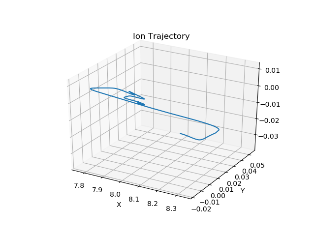
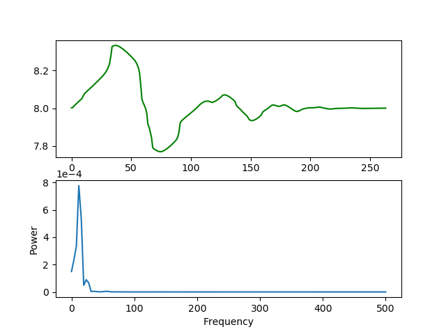
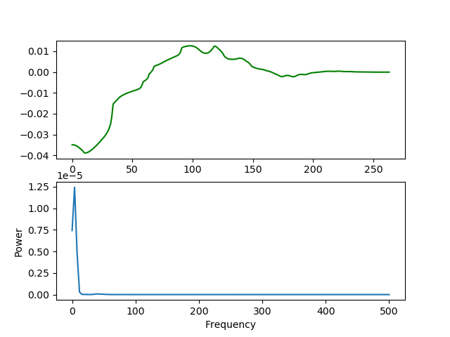

| In the Bleiholder Lab, I have been studying ion trajectories in our trapped ion mobility spectrometry (TIMS) instrument. To study ion trajectories, I have been using SIMION, an ion optics simulation program that simulates ion trajectories based on user defined electric potentials. The image to the right is an example of a 3D ion trajectory collected from a qudrupole ion trap simulation produced by SIMION. Any ion trajectory produced from SIMION can be graphed similarly to this, with the following power specrtal analysis on different frequency components in the trajectory. |  |
| Ion Trajectory in the r-Direction (Green) and the Power Spectral Density (Blue) | Ion Trajectory in the z-Direction (Green) and the Power Spectral Density (Blue) |
|---|---|
|  |  |
These power spectral densities (PSDs) can be used to examine the contribution of different frequency components to the ion trajectory. What should be noticed here is that there are clearly more frequencies in the r-direction than the z-direction. So, in this example of a quadrupole ion trap, ions experience more types of motion in the radial direction than the axial. In the future, more simulations will be run in SIMION to further show differences in axial and radial contributions in ion trajectories.